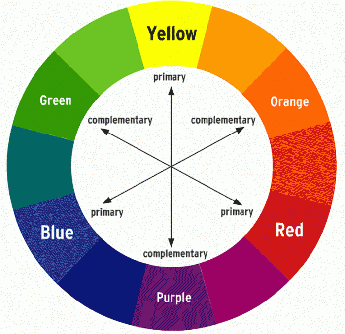
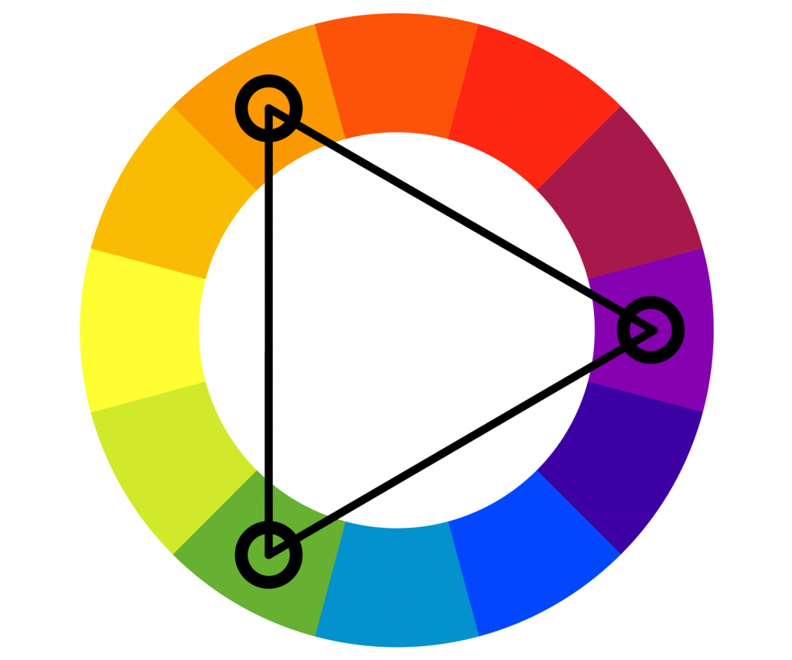

I. What is Color Theory?Colors are what the human eye sees whenever light reflects off a surface. Throughout human history, most colors were given a variety of interpretations, based on their cognitive effect (cooler hues tend to give an idea of calmness, while warmer hues give the idea of energy), historical contexts (purple as a color was related to royalty, due to its costly production in the past which could only be afforded by the rich), or presentations in nature (A poison dart tree frog has a variety of colors, signaling its toxicity). Color theory puts these ideas into practice, establishing patterns which seek to move the human heart and mind, symbolism provided to those who seek analysis. This lesson tackles the multitude of forms which color can take, specifically how well certain hues match with each other. By the end of this lesson, you will be able to:
|

|
II. Color Ranges and You
A. HuesHues are what makes one color discernable from another. The hue is mostly decided by what colors the material cannot absorb from visible light. All objects in the world have the capacity to absorb light. For example, apples cannot absorb red, so the surface of the apple is reflected as red. |
Source: https://www.britannica.com/science/complementary-color#/media/1/129880/269449 |
Source: https://color-wheel-artist.com/hue/ |
B. TonesTones are what appears when a hue is supplied with a gray color. It is mostly used to serve as the deciding factor of a color's saturation. |
C. ShadesShades are what appears when a hue is added with black. These may serve as the shadows of a piece. |
D. TintsTints are what appears when a hue is given the color white. They serve as highlights of an object, appearing under a light source. |
III. Schemes of Color
A. ComplementaryA color scheme wherein two colors situated on the opposite ends of the color wheel are used together. Used to provide a sense of duality. |

Source: https://thebass.org/learn/lesson-plan-world-of-color/ |
Source: https://uxplanet.org/how-to-use-analogous-color-scheme-in-design-bf32d18ab05c |
B. AnalogousAnalogous refers to a set of three colors placed next to each other on the color wheel. Creates unity in a piece, due to their sequential temperatures. |
C. TriadA set of colors found on three equally spaced places on the color wheel. Provides equal contrast and balance. |

Source: https://www.color-meanings.com/triadic-colors/ |
IV. Colors and Media
|
Color has a dominating role in many forms of media, setting the tone or theme of every project. It can replicate reality or give a reinterpretation of it. It allows distinction between characters, props, and backgrounds. It even makes the human brain react emotionally depending on the color used. |
Source: Cowboy Bebop |
A sunset by itself inspires a sense of wonder and melancholy by itself, but in the context of various themes and patterns, it may turn into a different feeling entirely, like welcoming the end of the day, where you can just grab a cigarette with a friend beside you and watch as the stars shine on one by one.
You could even take meaning from something so abstract and surreal that it takes a voracious appetite for many kinds of media to tackle. Perhaps the all-encompassing red which covers the room below themes it in a violent light, which we expect of the color red, but the context of the scene seems to subvert it, promoting serenity and jovialness.
Source: Twin Peaks |
This view also applies to the entirety of humanity's collective mind, placing labels and meaning to concepts which had existed before them. The emotion of color is entirely reliant on our own perceptions, memories, experiences and the like. To see the emotion within such forms of media is to use your life as lenses to look through. |